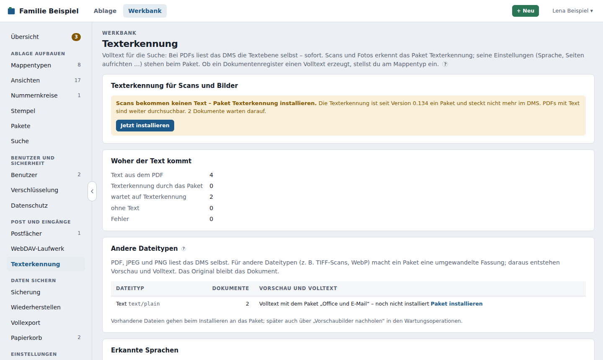

Texterkennung und Wartung¶
Damit die Suche auch den Text von Dokumenten findet, erzeugt Ablago zu jedem neuen Dokument einen Volltext – im Hintergrund, ohne dass jemand warten muss:
Texterkennung gehört zur Vorlage Betrieb, Wartungsoperationen nur zur Vorlage Alles.
Einen Bereich nicht in der Leiste gefunden?
Manche Bereiche der Werkbank, zum Beispiel Wartungsmodus, Datenbank-Anbindung oder Wartungsoperationen, sind in der Vorlage Haushalt ausgeblendet. Unten in der Leiste steht, wie viele Bereiche ausgeblendet sind; ein Klick zeigt sie. Dauerhaft einblenden kannst du sie unter Werkbank anpassen. Ausgeblendet heißt nicht abgeschaltet.
- PDFs: Ablago liest die vorhandene Textebene selbst (poppler) – sofort. PDFs, die ein Programm oder ein Scanner mit Text erzeugt hat, sind damit gleich durchsuchbar.
- Scans und Fotos (gescannte PDF-Seiten, JPEG, PNG) haben keine Textebene. Ihren Text erkennt das Paket Texterkennung (Deutsch und Englisch) (Kennung
texterkennung) aus dem Katalog. - Andere Dateien (z. B. Word, Excel, TIFF) bekommen vorerst keinen Volltext.
Seit Version 0.134: Texterkennung ist ein Paket
Bis Version 0.133 steckte die Texterkennung (Tesseract) im Image. Seit 0.134 ist das Image schlanker, und Scans bekommen ihren Text nur noch mit dem Paket Texterkennung. Nach dem Update zeigt die Übersicht der Werkbank den Hinweis „Texterkennung ist jetzt ein Paket“ mit Jetzt installieren – das führt direkt zum Paket unter Werkbank → Pakete. Vorhandener Volltext bleibt unverändert. Dokumente, die noch auf ihre Texterkennung warteten, stehen auf „wartet auf Texterkennung – kein Paket installiert“; sobald das Paket installiert ist, gehen sie von selbst an das Paket. Ohne Internet installierst du es aus einer Sammeldatei.
Texterkennung als Paket¶
Das Paket Texterkennung (ab 2.0, Tesseract als WebAssembly im Paket-Läufer) übernimmt die Texterkennung. Es braucht dafür das Recht Texterkennung übernehmen. So läuft es:
- Ablago liest bei PDFs die Textebene – sofort, ohne Wartezeit. Hat ein PDF Text, ist es gleich durchsuchbar.
- Jedes Dokument meldet Ablago dem Paket (Ereignis Volltext fertig) – auch, wenn es keinen Text gefunden hat.
- Dokumente ohne Text (Scans, Fotos) – und PDFs, in denen neben Textseiten gescannte Seiten stecken – stehen auf „wartet auf Texterkennung (Paket …)“, bis das Paket den Volltext schreibt. Danach steht am Dokument „Texterkennung durch Paket …“. Bei langen Dokumenten zeigt das Paket dort, wie weit es ist (z. B. „Seite 20 von 64“).
- Was das Paket erkennt (Sprache, Seiten aufrichten, ob es auch PDFs mit Text neu erkennt, Auflösung), stellst du beim Paket ein: Werkbank → Pakete → Texterkennung → Einstellungen.
Ohne Paket bleiben Scans und Fotos ohne Text („wartet auf Texterkennung – kein Paket installiert“); PDFs mit Text sind trotzdem durchsuchbar.
Wie schnell? Das Paket ist etwas langsamer als die frühere eingebaute Texterkennung, weil es als WebAssembly abgeschottet läuft: Auf einem Rechner mit 2 Kernen (amd64) brauchte es für 10 gescannte Seiten etwa 31–35 Sekunden, die eingebaute dort 25–26 Sekunden; eine einzelne Seite dauert vom Hochladen bis zum Text etwa 4–6 Sekunden. Erkannt hat es dabei genauso gut. Lange Dokumente erkennt es abschnittsweise, die Zeitgrenze des Paket-Läufers greift nicht. Mehr Messwerte stehen im README des Pakets.

Andere Dateitypen¶
Ablago liest selbst nur PDF, JPEG und PNG. Für andere Dateitypen gibt es Vorschaubild und Volltext, wenn ein Paket zum Umwandeln installiert ist (Recht Dateien umwandeln, seit Version 0.137): Das Paket macht aus der Datei eine umgewandelte Fassung (PDF, PNG oder JPEG), daraus entstehen das Vorschaubild und der Volltext – bei einem Scan über das Paket Texterkennung. Das Dokument bleibt die Originaldatei; Herunterladen, Weitergeben und Versionen betreffen immer das Original.
| Dateityp | Vorschau und Volltext mit | Fassung |
|---|---|---|
| PDF, JPEG, PNG | Ablago selbst (Scans und Fotos: Paket Texterkennung) | – |
| TIFF (auch mehrseitig, z. B. vom Scanner), WebP, GIF (erstes Bild), BMP | Paket Bildformate (dazu für den Text: Paket Texterkennung) | TIFF → PDF, WebP → JPEG, GIF und BMP → PNG |
| HEIC/HEIF (Fotos vom iPhone) | noch keinem Paket – siehe unten | – |
Word, Excel, PowerPoint, OpenDocument, RTF, Text, E-Mails (.eml, .msg) |
Volltext: Paket Office und E-Mail (Vorschau noch nicht, dms-registry #72) | – (das Paket liest das Original) |
Für Office-Dateien und E-Mails macht das Paket keine Fassung, sondern liefert nur den Volltext (Recht Volltext liefern, seit Version 0.145). Es liest dabei die Originaldatei. Bis es den Text schreibt, steht am Dokument „Volltext: wartet auf Paket · wartet auf Volltext (Paket Office und E-Mail)“. Ablago gibt ihm jede solche Datei – beim Hochladen, bei einer neuen Version, bei Volltext neu erzeugen, bei Erneut versuchen und Neu erzeugen am Dokument und beim Installieren für alle vorhandenen Dateien ohne Text. Kann das Paket eine Datei nicht lesen, steht sein Grund am Dokument, z. B. „Volltext durch Paket Office und E-Mail: Word lässt sich nicht lesen: mit einem Passwort verschlüsselt“. Bis 5 Millionen Zeichen je Dokument kommen in den Volltext (wie bei allen Dokumenten).
So sieht es aus:
- Ohne passendes Paket steht am Dokument „Volltext: ausgelassen“ mit dem Hinweis, welches Paket hilft (z. B. „TIFF-Dateien bekommen Vorschau und Volltext mit dem Paket „Bildformate““); neben dem Dokument steht das Dateisymbol.
- Installierst du das Paket, gehen alle vorhandenen Dateien dieser Typen an das Paket – neue gleich beim Hochladen. Bis die Fassung da ist, steht am Dokument „wartet auf Umwandlung (Paket …)“.
- Mit der Fassung entsteht das Vorschaubild (Hinweis beim Darüberfahren: „Vorschau aus der umgewandelten Fassung eines Pakets“) und der Volltext. Am Dokument steht dann z. B. „Text aus dem PDF · aus der umgewandelten Fassung (Bildformate 1.0.0)“ mit dem Link Fassung ansehen; in der Historie der Mappe „umgewandelte Fassung erstellt“.
- Kann das Paket eine Datei nicht lesen (z. B. beschädigt), steht sein Grund am Dokument („Umwandlung durch Paket Bildformate: …“). Erneut versuchen gibt die Datei noch einmal an das Paket.
Werkbank → Texterkennung → Andere Dateitypen zeigt je Dateityp, wie viele Dokumente es gibt und welches Paket sie umwandelt bzw. ihren Volltext liefert – oder welches Paket aus dem Katalog es könnte, mit Paket installieren.
Sicherung: Seit Version 0.140.1 liegen die Fassungen mit den Dokumenten im Ordner des Haushalts (/data/files/<Haushalts-Id>/fassungen) und gehen mit in die Sicherung und den Vollexport (dort als <Datei>.fassung.pdf neben dem Original). Nach einer Wiederherstellung steht alles so da wie vorher – Fassung ansehen, Volltext und Vorschau –, auch ohne das Paket oder mit einer neueren Version, die heute anders umwandeln würde. Fassungen vom früheren Ort (/data/files/fassungen, Versionen 0.137 bis 0.140.0) zieht Ablago beim ersten Start von selbst um. Ältere Sicherungen ohne Fassungen lassen sich weiter einspielen; dann holt Werkbank → Wartungsoperationen → Vorschaubilder nachholen die Fassungen beim Paket nach, sofern es installiert ist (der Volltext ist Teil jeder Sicherung und bleibt).
Warum noch kein Paket für HEIC? HEIC-Fotos sind mit HEVC (H.265) komprimiert. Die freien Bibliotheken dafür (libheif, libde265) stehen unter LGPL, und für HEVC gibt es Patentpools, die auch Software-Decoder lizenzieren wollen – das klären wir, bevor ein Paket in den offiziellen Katalog kommt. Bis dahin: Auf dem iPhone unter Einstellungen → Kamera → Formate „Maximale Kompatibilität“ wählen (dann speichert es JPEG), oder beim Hochladen über den Browser – Safari wandelt Fotos aus der Mediathek dabei meist schon in JPEG.
Archivfassung (PDF/A)¶
Mit einem Paket wie PDF/A (Recht Archivfassung ablegen) bekommt jedes Dokument zusätzlich eine Archivfassung: ein durchsuchbares PDF/A, ein Format für die Langzeitaufbewahrung mit unsichtbarer Textebene genau auf den Wörtern. Das Original bleibt unverändert das Dokument.
- Wann: erst, wenn der Volltext feststeht – bei Scans also nach der Texterkennung. Ablago gibt dem Paket dafür die Wortpositionen aus der Textebene bzw. aus der Texterkennung. Bei TIFF und Co. nimmt das Paket die Lesefassung aus Andere Dateitypen.
- Welche: Standard sind alle PDFs (auch mit Text), Fotos und Scans. Mit der Einstellung des Pakets „nur Scans und Bilder“ bekommen PDFs mit vollständigem Text keine – das spart Platz (für PDFs verdoppelt sich der Speicherbedarf etwa). Ist ein PDF schon gültiges PDF/A, gilt es selbst als Archivfassung. Verschlüsselte PDFs bekommen keine, der Grund steht am Dokument. Digital signierte PDFs bekommen eine für die Anzeige; die Signatur prüft man am Original.
- Nie nachladen: Die Archivfassung enthält nur, was in der Datei selbst steckt. Verweise auf Inhalte im Internet, JavaScript und Aktionen beim Öffnen übernimmt sie nicht – Ablago lehnt eine Archivfassung mit solchen Inhalten ab. Hatte das Original welche, steht am Dokument „Enthielt Verweise auf externe Inhalte, die nicht übernommen wurden“; die Adressen stehen nur im Protokoll (Modul archivfassung).
- Prüfung: Ablago nimmt nur ein PDF mit PDF/A-Kennung an (XMP-Metadaten, ungefiltert), unverschlüsselt, bis 100 MB und 1000 Seiten. Die volle Prüfung der Konformität macht das Paket selbst (z. B. mit veraPDF in seiner CI).
- Werkbank → Texterkennung → Archivfassung (PDF/A) zeigt das Paket, wie viele Archivfassungen es gibt, wie viele warten, ausgelassen oder abgelehnt sind – und die Dokumente mit Grund.
- Sicherung und Vollexport: Die Archivfassung gehört zur Sicherung (mit Probe-Wiederherstellung) und steht im Vollexport als
<Datei>.pdfa.pdfneben dem Original. Die Auskunft nach Art. 15 bleibt, wie sie ist: Dokumente wie abgelegt. - Nach Änderungen am Original (neue Version, drehen, Seiten löschen, teilen, schwärzen) gilt die alte Archivfassung nicht mehr; angezeigt wird das Original, bis das Paket neu erzeugt hat.
Werkbank → Texterkennung¶
Die Seite ist eine Übersicht; Einstellungen der Erkennung gibt es hier nicht mehr (sie stehen beim Paket):
- Texterkennung für Scans und Bilder: welches Paket die Texterkennung übernimmt, mit Link zu seinen Einstellungen, und wie viele Dokumente gerade darauf warten. Fehlt das Paket, steht hier der Hinweis mit Jetzt installieren.
- Woher der Text kommt: wie viele Dokumente ihren Text aus dem PDF haben, vom Paket, von der früheren eingebauten Texterkennung (bis 0.133), ohne Text sind, auf die Texterkennung warten oder einen Fehler hatten.
- Andere Dateitypen: TIFF, WebP, Word, E-Mails und Co. – wie viele es gibt und welches Paket sie umwandelt oder ihren Volltext liefert (siehe Andere Dateitypen).
- Erkannte Sprachen mit dem Hinweis, wenn dem Paket Sprachdaten fehlen (siehe Weitere Sprachen).
- Warteschlange, Werkzeuge (poppler) und Aufträge (siehe unten).
Ob ein Dokumentenregister überhaupt einen Volltext erzeugt, stellst du am Mappentyp ein (Volltext erzeugen, Standard: an).
Steht die Warteschlange, sagt ein Hinweis oben auf der Seite und bei Volltext neu erzeugen warum: ausgeschaltet (mit Einschalten) oder pausiert, solange der Wartungsmodus an ist (mit Wartungsmodus beenden). Ein nur angekündigter Wartungsmodus hält die Warteschlange nicht an.
Sprache automatisch erkennen¶
Ablago erkennt aus dem Text selbst, in welcher Sprache ein Dokument geschrieben ist – offline und ohne fremde Dienste: Es zählt typische kurze Wörter (Artikel, Präpositionen, Grußformeln) und Sonderzeichen. Unterschieden werden Deutsch, Englisch, Französisch, Spanisch, Italienisch, Niederländisch, Türkisch, Polnisch, Portugiesisch, Russisch, Ukrainisch und Arabisch. Bei sehr wenig Text (z. B. nur Zahlen) bleibt die Sprache offen.
Die erkannte Sprache steht am Dokument neben dem Stand des Volltexts (z. B. „Volltext: fertig · 2 Seiten · Französisch“), auch bei PDFs mit Textebene. Sie ist ein eigenes Feld des Dokuments, und die Volltextsuche nimmt die Wortstämme dieser Sprache: Im französischen Brief findet „cheval“ auch „chevaux“, im englischen „invoice“ auch „invoices“. Ohne erkannte Sprache gilt Deutsch.
Das Paket Texterkennung nutzt dieselbe Erkennung bei Sprache: Automatisch – seit 2.1.0 für jede Seite einzeln: Es liest eine Seite zuerst in der Sprache der Seite davor (am Anfang Deutsch), erkennt die Sprache und liest die Seite in der erkannten Sprache ein zweites Mal, wenn es eine andere ist und das Paket ihre Sprachdaten hat – das bessere Ergebnis gilt. Quer liegende oder auf dem Kopf stehende Seiten richtet es vorher auf.
Dokumente in mehreren Sprachen¶
Seit 0.139.0 hat ein Dokument nicht nur eine Sprache: Die Sprache steht je Seite fest, auf einer Mischseite auch zwei (etwa ein deutscher Brief mit beigelegtem französischem Schreiben, oder eine zweisprachige Bestätigung). Am Dokument steht dann die Sprache mit dem meisten Text und die übrigen: „Volltext: fertig · 3 Seiten · Deutsch, enthält auch Französisch“. Die Suche nimmt je Seite die Wortstämme ihrer Sprache – „Beglaubigung“ findet die deutsche Seite, „ambassades“ die französische.
- Bei PDFs mit Textebene erkennt Ablago die Sprache jeder Seite selbst (Absatz für Absatz; eine zweite Sprache zählt ab etwa einem Fünftel des Texts der Seite).
- Bei Scans meldet das Paket Texterkennung ab 2.1.0 die Sprachen je Seite: Es liest jede Seite in ihrer Sprache (zweiter Durchgang, wenn die Sprache wechselt) und eine Mischseite mit beiden Sprachen zugleich, wenn das deutlich sicherer ist. Dafür braucht es die Sprachdaten (z. B. die Zusatzsprache Französisch); ohne sie liest es die Seite auf Deutsch, die Suche nimmt trotzdem die Wortstämme der erkannten Sprache.
- Wechselt die Sprache zwischen zwei Seiten ganz, zeigt die Post den Hinweis „Ab Seite 2 beginnt vermutlich ein eigenes Schreiben – Post teilen?“. Geteilt wird nie von selbst: Der Knopf öffnet nur die Seitenansicht mit dem Vorschlag; der Hinweis lässt sich für alle ausblenden.
- Bestand: Vorhandene Dokumente behalten ihre eine Sprache und ihren Suchindex; das Update baut nichts neu auf (Migration 053 in Sekundenbruchteilen). Wer auch ältere Scans je Seite lesen lassen will, startet Volltext neu erzeugen → Für alle Dokumente (siehe unten; das dauert, je nach Menge, Stunden). PDFs mit Textebene bekommen ihre Seitensprachen damit in Sekunden.
Pakete und die Schnittstelle geben die Sprache mit dem Volltext an (PUT /dokumente/{id}/volltext mit sprache) oder setzen sie einzeln (PUT /dokumente/{id}/sprache, z. B. { "sprache": "fra" }, null = keine Angabe; seit 0.139.0 mit weitere auch die weiteren Sprachen). Das steht in der Historie der Mappe. Wie Pakete Sprachen je Seite melden, beschreibt das Entwicklerhandbuch (Pakete mit Code → Sprachen je Seite).
Weitere Sprachen¶
Im Paket Texterkennung (Deutsch und Englisch) stecken Deutsch, Englisch und die Lageerkennung. Weitere Sprachen kommen als Zusatzsprachen aus dem Katalog dazu, je Sprache ein eigenes Paket, z. B. Texterkennung – Zusatzsprache Französisch (texterkennung_fra). Es gibt sie für Französisch, Spanisch, Italienisch, Niederländisch, Portugiesisch, Polnisch, Türkisch, Russisch, Ukrainisch und Arabisch (Kennung texterkennung_ und das Sprachkürzel: fra, spa, ita, nld, por, pol, tur, rus, ukr, ara). Ein eigenes Image oder eingehängte Sprachdateien braucht es nicht mehr.
Installieren: Beim Installieren der Texterkennung – unter Werkbank → Pakete oder im Einrichtungsassistenten – fragt Ablago gleich darunter Weitere Sprachen? und installiert die angehakten Sprachen im selben Schritt mit, mit einer Bestätigung für alle Rechte. Später geht das unter Werkbank → Pakete → Texterkennung → Weitere Sprachen → Auswählen … (siehe Mehrere Pakete in einem Schritt). Jede Sprache bleibt ein eigenes Paket mit eigener Version und eigenem Update.
Ob mehr Sprachen die Erkennung bremsen: Welche Sprache eine Seite hat, erkennt das Paket am gelesenen Text anhand kurzer Wortlisten für alle oben genannten Sprachen – immer für alle, ob ihre Sprachdaten installiert sind oder nicht. Mehr Zusatzsprachen machen diese Erkennung also weder langsamer noch ungenauer. Eine Zusatzsprache kostet nur dort Zeit, wo sie gebraucht wird: Erkennt das Paket eine Seite als Französisch und ist Französisch installiert, liest es die Seite ein zweites Mal auf Französisch und nimmt die sicherere Lesung.
Unter Werkbank → Texterkennung → Erkannte Sprachen siehst du, wie viele Dokumente in welcher Sprache vorliegen und ob das Paket ihre Sprachdaten hat. Fehlen sie, macht die Seite einen Vorschlag, z. B. „12 Dokumente auf Französisch – das Paket Texterkennung liest sie besser mit ‚Texterkennung – Zusatzsprache Französisch‘ (texterkennung_fra)“, mit Link zu diesem Paket. Fehlende Sprachdaten nennt das Paket außerdem im Ergebnis und im Protokoll des Paket-Läufers („Sprachdaten fehlen: fra (Zusatzpaket texterkennung_fra)“).
Nach dem Installieren einer Zusatzsprache erkennt Volltext neu erzeugen → Für alle Dokumente (siehe unten) die vorhandenen Dokumente neu – oder du startest einzelne unter Aufträge → fertig neu.
Aufträge¶
Unter Aufträge siehst du in einer Liste mit fester Höhe die Dokumente je Stand (Fehler, wartet, läuft, wartet auf Texterkennung, ausgelassen, fertig) – mit Mappe (als Link), Größe, Zeitpunkt und dem Grund bei Fehlern oder ausgelassenen Dokumenten.
- Dokumente auswählen und Neu starten: Sie kommen wieder in die Warteschlange.
- Wartende aus der Warteschlange nehmen bzw. laufende abbrechen: Sie gelten dann als ausgelassen („Vom Administrator abgebrochen“); ein laufender Vorgang (pdftotext) wird beendet. Bei wartet auf Texterkennung verwirft Ablago die noch nicht zugestellte Meldung an das Paket; Text aus dem PDF bleibt.
- Neu starten lässt den Volltext ausdrücklich neu erzeugen: Auch ein Paket erkennt dann Dokumente neu, die schon Text haben.
- Alle Fehler neu starten reiht alle Dokumente mit Fehler wieder ein.
Wenn die Datenbank ausgelastet ist: Speichern viele Vorgänge gleichzeitig (ein Stapel Scans, Demo-Daten, ein Import), kann die Datenbank das Speichern eines Ergebnisses ausnahmsweise abbrechen. Ablago versucht es dann von selbst noch einige Male mit kurzer Pause. Klappt es auch dann nicht, steht das Dokument auf Fehler mit dem Grund „Text erkannt, aber nicht gespeichert – die Datenbank war ausgelastet“ und einem Eintrag im Protokoll – nie still ohne Volltext. Neu starten bzw. Alle Fehler neu starten holt es nach. Das gilt auch, wenn ein Paket den Text schreibt: Es bekommt dann die Antwort 503 und sendet erneut.
Passwortgeschützte PDFs erkennt Ablago und lässt sie mit dem Grund „Das PDF ist mit einem Passwort geschützt“ aus, statt einen Fehler zu melden – ein neuer Versuch würde nichts ändern.
Alle Meldungen der Texterkennung stehen im Protokoll unter dem Modul texterkennung.
Am Dokument sehen alle Benutzer den Stand (wartet, läuft, wartet auf Texterkennung, fertig, Fehler, ausgelassen) und woher der Text kommt („Text aus dem PDF“, „Texterkennung durch Paket …“); bei einem Fehler lässt sich die Texterkennung dort erneut versuchen, und ein fertiger Text lässt sich anzeigen. Wer die Mappe bearbeiten darf, kann den Volltext eines Dokuments mit Neu erzeugen ausdrücklich neu erzeugen lassen. Liegt dieselbe Datei schon mit Volltext in einer anderen Mappe, übernimmt Ablago diesen Text.
Wartungsoperationen¶
Werkbank → Wartungsoperationen sammelt Arbeiten am ganzen Bestand, die du bei Bedarf anstößt:
- Volltext neu erzeugen – für Dokumente ohne Text oder für alle, siehe unten.
- Vorschaubilder nachholen erzeugt für ältere PDFs und Bilder das kleine Bild der ersten Seite, das neben jedem Dokument steht. Neue Dokumente bekommen es gleich nach dem Hochladen, ältere sonst beim ersten Anzeigen. Die Bilder entstehen eins nach dem anderen mit
pdftoppm(poppler, im Image enthalten). Dateien anderer Typen ohne Fassung (z. B. TIFF) gibt es dabei an das Paket zum Umwandeln, falls eins installiert ist. - Alle Dateien prüfen liest jede gespeicherte Datei, auch ältere Versionen, und vergleicht sie mit ihrem Prüfwert. So fällt auf, wenn eine Datei auf dem Speicher verändert wurde oder fehlt. Mehr dazu unter Alle Dateien prüfen.
- Nummern nachträglich vergeben gibt Mappen eine Nummer, die angelegt wurden, bevor ihr Feld einen Nummernkreis bekam. Mehr dazu unter Nummern nachträglich vergeben.
- Absender bereinigen leert falsche Absender bei älterer Post, siehe unten.
- Angaben, die nicht zum Format passen listet gespeicherte Werte auf, die nicht zu einem Format oder zu Datumsgrenzen passen, siehe unten.
Alle laufen im Hintergrund; Ablago bleibt dabei benutzbar.
Volltext neu erzeugen¶
Läuft wie bei einem neuen Dokument: Ablago liest die Textebene neu und gibt das Dokument an das Paket für die Texterkennung.
- Für Dokumente ohne Text – alle Dokumente, deren Volltext leer ist: noch nie gelesen (z. B. vor Version 0.11 hochgeladen), Scans, für die es noch kein Paket gab, oder nach einem Fehler. Dazu gehören auch andere Dateitypen wie TIFF: Ohne Fassung gehen sie an das Paket zum Umwandeln, mit Fassung wird diese gelesen. Ersetzt das frühere „Volltext nachholen“.
- Für alle Dokumente – nach einer Rückfrage mit der Anzahl. Das ist ein ausdrückliches Neu: Das Paket erkennt dann auch Dokumente neu, die schon Text haben – auch wenn bei ihm „Vorhandenen Volltext verwerfen und neu erkennen“ aus ist. Sinnvoll etwa nach einem neuen Sprachpaket. Bis das Paket fertig ist, bleibt der bisherige Text für die Suche stehen.
Nur Dokumente in Registern, die einen Volltext erzeugen. Es läuft als Auftrag mit Fortschritt („Textebene lesen und an die Texterkennung geben: 120 von 800“) und lässt sich abbrechen; Ablago bleibt benutzbar. Der Auftrag selbst ist schnell – die Zeit braucht die Texterkennung danach: Das Paket Texterkennung schafft etwa 10 Seiten in 35 Sekunden (amd64, 2 Kerne), 1.000 Seiten also in rund einer Stunde. Wie weit es ist, siehst du unter Werkbank → Texterkennung („wartet auf Texterkennung“).
Ist kein Paket für die Texterkennung installiert, sagt die Seite das mit dem Weg zu Werkbank → Pakete.
Absender bereinigen¶
Bis Version 0.99 trug Ablago bei hochgeladener Post ohne Absender den Namen dessen ein, der sie angelegt hat – bei Post aus dem Eingangsordner „Eingangsordner“. Absender ist aber, wer den Brief geschickt hat. Neue Post bekommt seitdem keinen Absender mehr, solange niemand ihn einträgt.
Für den Bestand zeigt Absender bereinigen eine Vorschau: eingehende Post mit Kanal Hochgeladen, API, WebDAV oder Ordner, deren Absender genau der Name des Anlegenden (bzw. „Eingangsordner“) ist. Post aus Postfächern und versendete E-Mails sind nie dabei. Nimm den Haken weg, wo der Absender doch stimmt, und tippe auf Absender leeren. In der Historie jeder Post steht danach, was vorher im Feld stand und wer bereinigt hat.
Angaben, die nicht zum Format passen¶
Bekommt ein Feld ein Format oder Datumsgrenzen – selbst eingestellt oder mit einem Paket-Update –, bleiben gespeicherte Angaben gültig. Diese Liste zeigt sie je Mappentyp und Feld: die Mappe (ein Klick öffnet sie in der Ablage), die Angabe und was nicht passt, z. B. „Eine deutsche PLZ hat genau 5 Ziffern“ oder „Das Datum darf nicht in der Zukunft liegen“. Je Feld stehen höchstens 200 Mappen da.
Korrigieren musst du nichts sofort: Sobald jemand das Feld in der Mappe ändert, muss die Angabe passen. Andere Felder der Mappe lassen sich wie bisher speichern.